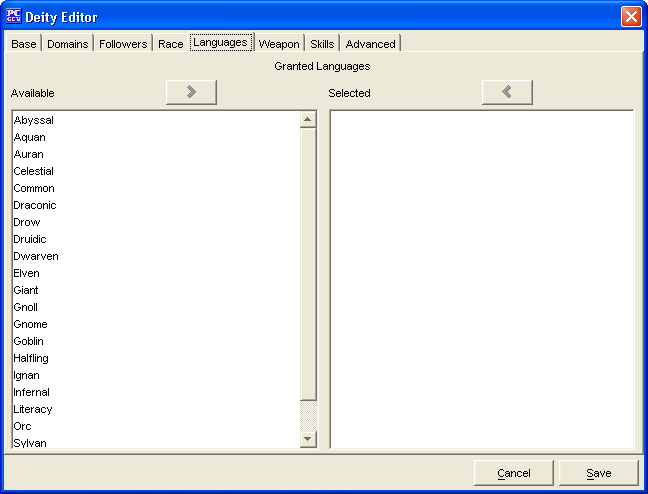

Deity Editor: Languages Tab

The Languages tab is used to define which languages are granted to the
follower of the deity.
The two Granted Languages windows, Available and Selected are used to create
a list of languages granted to the deity's followers.
- The language names in the Available window are drawn from whichever sources were loaded into
PCGen. (i.e. If you have SRD and Soveriegn Stone loaded as sources, then languages from both sources
will appear in the window.)
- The Add and Remove buttons will move the highlighted language between the 2 windows,
as will double clicking on a language name in either window.
The Cancel and Save buttons, which appear on every tab, are used to either cancel the
deity creation or save it to the customdeities.lst file.